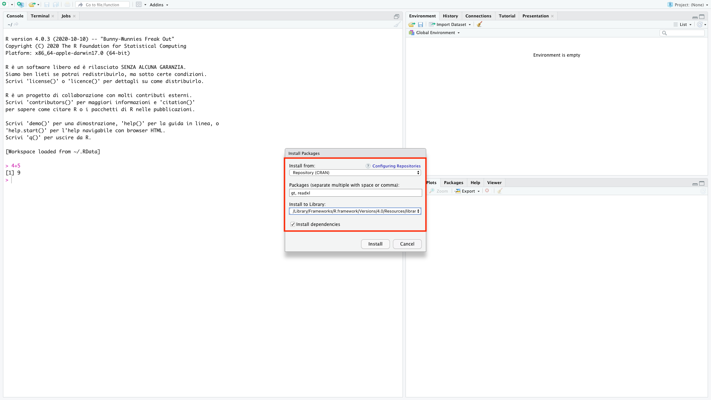
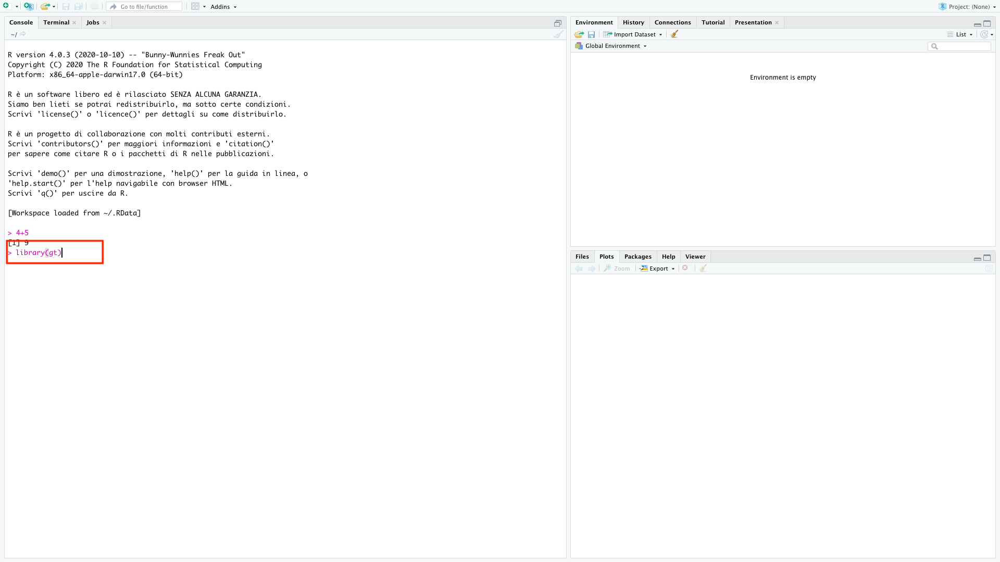
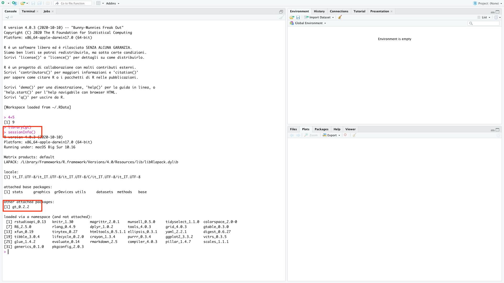
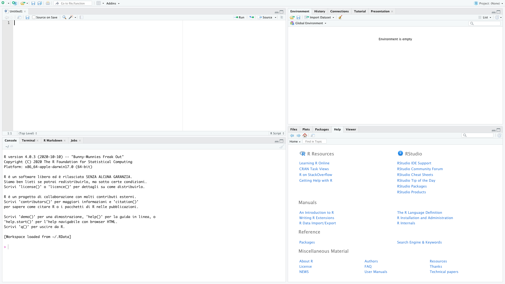

1 Installation
1.1 Introductory activities
First of all we need to install the software that will allow us to work with the R language (R Core Team 2022). We will need to install two software: R and R-Studio. The first is a compiler for the R language, we need to install it but we will never use it directly. The latter is an interface software that runs on top of R and allows us to have some facilitation and suggestions while working. Within this manual I will use R and R-Studio as synonyms, but I will be referring always to the use of R-Studio.
Additional to R and R-Studio we will need to install some packages. The packages are extension of the software that bring in additional functions and/or data.
To install the software, follow all the 9 steps below:
- Download the R installer from CRAN.
Figure 1.1: Select the version of R according to your operating system.
Run the installer keeping the default settings. If you do not have admin rights on your computer, please ask you IT Support to give you full permissions to the R directories. Otherwise you will not be able to install packages afterwards.
Download the R-Studio installer from R-Studio.
Figure 1.2: Select the version of R-Studio according to your operating system.
Once the installation of R is completed (NOT BEFORE), run the R-Studio installer keeping the default settings.
Run R-Studio. It should open an window like the one in the image below.
Figure 1.3: R-Studio.
In the left hand window, by the sign “>”, type “4+5” (without the quotes) and hit enter. An output line reading “\([1]\) 9” should appear. This means that R and R-Studio are working properly. If this is not successful, please contact me.
Go to Tools -> Install Packages and install the packages:“gt”, and “readxl”. See the image below.

- Check that the packages are installed by typing “library(gt)” (without the quotes) in the prompt and press enter.

- Finally type “sessioninfo()” (without the quotes) and check that gt has been installed.

1.2 Visualization suggestions
Following some visualization suggestions that you may explore. Personally, I find them really helpful.
Setting the work-space:
- View -> Panes -> Panes Layout
- clockwise from top-left you should have: Source, Environment, Files, Console
- View -> Panes -> Panes Layout
Setting the color style of the code:
- Tools > Global Options -> Appearance -> Editor Theme -> Xcode
1.3 The workspace

The source is a text file with extension .R that can be saved and opened from every version of R and R-Studio. This file will allow us to run and rerun a bunch of code, modify some details if we made a mistake or if we want to change something. This will always be our best friend.
The Environment is the place where R saves temporarily all the data that we tell “him” to save. The environment will never be clean or contain only the essential objects you need (maybe this will happen when you will be a great programmer, but not for now). We will see there all your data-sets, variables, vectors, etc…
The bottom right part of the screen is devoted to many things. Viewer, Plots and Help will be activated automatically to show you the requested output. Packages, instead, is useful only when we have to install new packages.
The Console is where we can write some code that will not be saved, if not in the temporary history of the console itself. This space is also where R give us the feedback of our inputs in the form of results, warnings and errors.